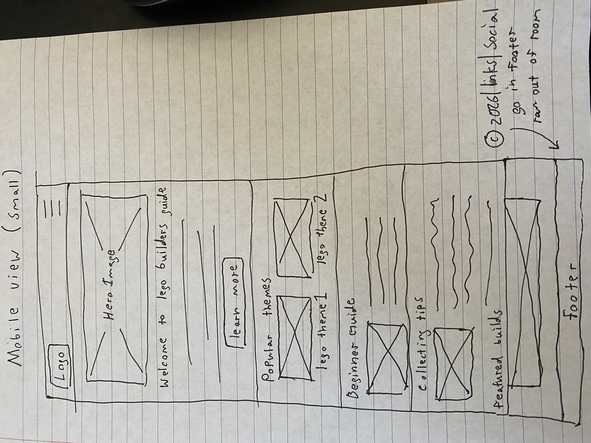
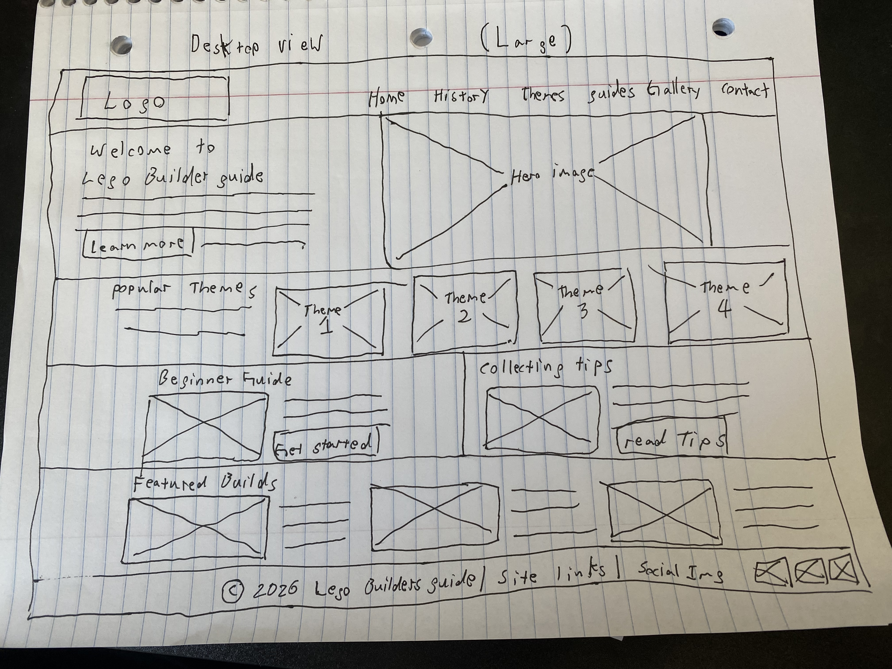

Site Name
Lego Builder's Guide
I chose the name "Lego Builder's Guide" because the website will provide information and helpful resources for people interested in Lego building and collecting. The name represents both the informational and beginner-friendly focus of the site.
Site Purpose
The purpose of Lego Builder's Guide is to help new and experienced Lego builders learn more about the hobby. The website will provide information about Lego history, popular Lego themes and sets, beginner building guides, collecting tips, and examples of Lego sets and fan builds.
The site will also help visitors discover new LEGO themes and provide useful information for someone starting or expanding a Lego collection.
Scenarios
These questions represent things that visitors to the website may want to learn:
- What LEGO themes and sets would be good for someone who is new to the Lego hobby?
- What should I know before starting or expanding a Lego collection?
- What are some popular Lego themes and what makes them different from each other?
Color Scheme
The website will use colors inspired by the bright colors commonly associated with Lego bricks and the Lego company.
Lego Red
#D71920
Used for major headings, the header, and important design elements.
Lego Yellow
#FFD500
Used for accents, highlighted sections, and other visual details.
Dark Gray
#222222
Used primarily for body text and areas requiring strong contrast.
Typography
Arial
Arial Bold will be used for headings and navigation because it is simple, readable, and works well with the colorful Lego-inspired design.
Verdana
Verdana will be used for paragraphs and other body content because it is easy to read on different screen sizes.
Wireframes
The following wireframes show the planned layout of the home page for both small and large screen sizes.

